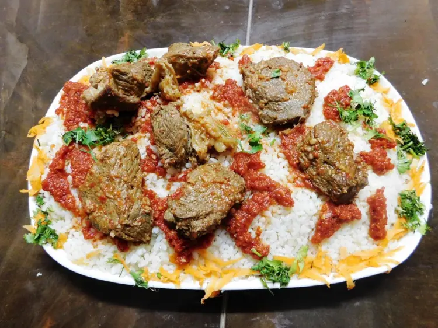

Fatteh

One of our favorite Egyptian food recipes in this Egyptian fattah. Spiced boiled lamb/beef served over a bed of rice and toasted pita bread then served with garlicky warm tomato sauce. A feast in your mouth.
Main Ingredients
- Beef
- Vegetables
- Rice
- Bread
Steps
- In a deep pot melt butter or ghee over medium-high heat, add mastic, and stir until mastic pieces are melted.
- Add meat cubes and brown all over.
- Add the bay leaves, sugar, black pepper and cardamom, stir to combine.
- Add onion, garlic, tomato, celery, and carrots. Mix everything well together. Pour in hot boiling water to cover. Remove any foam rising at the surface. Bring the pot to a boil, reduce heat. Cover the pot loosely and let simmer until done. Add salt in the last 5 minutes of cooking. Strain broth and take the meat out with a slotted spoon and cover with plastic wrap as we will need them later.